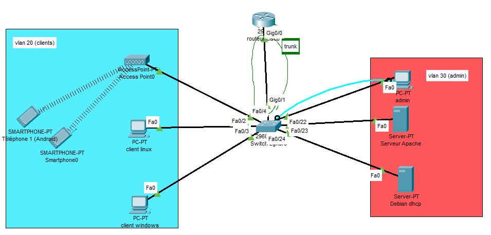

Année 1, semestre 1
Infrastructure GELTRAM
Configuration des équipements de routage (switch et routeur). Accès en SSH et réseau divisé en deux vlans.
Mise à disposition d'un serveur DHCP et web.
Documentation partagée sur Google Drive, répartition des tâches sur Trello.

Année 1, semestre 2
Amélioration de l'infrastructure GELTRAM.
Conteneurs et machines virtuelles hébergés sur Proxmox.
Installation de services supplémentaires :
- Active Directory : Annuaire.
- DNS : Résolution de nom
- GLPI : Gestion de tickets.
- WSUS : Administration des mises à jour sur les postes Windows.
- FOG : Déploiement d'image sur les postes.
Complétion de l'infrastructure :
- DMZ : Isolation des services vulnérables
- Pare-feu : Installation de pfSense, filtrage du traffic entre le réseau local et extérieur.
Sécurisation des équipements de routage :
- DHCP snooping : Filtrage des trames DHCP.
- Spanning-tree : Empêcher les boucles.
- Access Lists : Filtrer le traffic au plus près de la source ou de la destination.
Atelier, premier semestre de la deuxième année
Infrastructure GSB :
Redondance des services :
Service web : Deux serveurs répliqués sur Corosync.
Service SQL : Deux serveurs reépliqués sur Corosync.
DHCP : Plages DHCP répliqués sur deux serveurs.
Active Directory : Service AD répliqué sur deux serveurs.